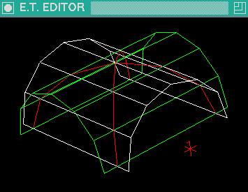
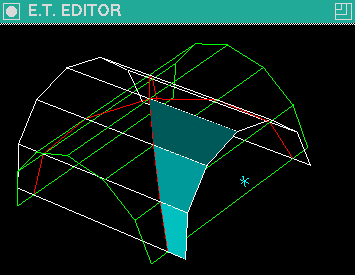
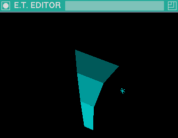
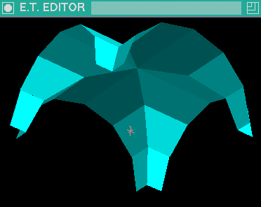

Example of triangle - triangle intersection
The white and yellow surfaces are
made of the triangles in the marked and current group
respectively.
-
Create the group of edges that are intersections of the triangles
from the marked and current groups (< F4> < Shift>+< I>).
Note that the visibility is restricted to this group
(you can reverse it with < 1 >)
and the color of
the edges is the current color of the cursor.
-
Remove the triangles from original groups.
(Use < N> to switch between groups, end < F1> < Shift>+< X>
to remove triangles.)
The endpoints of the edges are all the constructive points that you need.

-
Using the keys < F >, < Enter >, < T >, you can insert
the following triangles.
(Note that you may need to decrease cursor step (< F2 > < C>) to
obtain greater precision in approaching constructive points.)

-
Extract all visible objects to a single group (< F1> < E>)
and remove edges from current group (< F1> < Alt>+< X>).
(You may also remove the empty groups (< F1> < Z>).)

-
The remaining parts of the created object can be constructed by
extracting (< F1> < E>), copying (< F1> < C>),
and scaling by -1 in direction X or Z
(< F1> < Space> "sx" or "sz")
while the cursor
is placed in the center of symmetry of the constructed object.
-
Now we can extract (< F1> < E>),
copy (< F1> < C>),
and rotate around vertical axis
(< F1> < Up Arrow>).
-
Bellow is the view of the object from another perspective.
You may extract (< F1> < E>) and reduce the vertices
(< F5> < V>).
